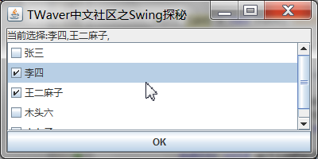

Swing探秘：编写一个JCheckListBox组件
2010年4月23日
http://twaver.servasoft.com/?p=177
记得Delphi里面有一个TCheckListBox控件，是一个可打勾的列表。但是这个东西在Swing里面并没有现成的。如今，我们就一起动手制作一个。根据Java的管理，就叫JCheckListBox吧。
写代码之前，先考虑以下问题：
继承：当然是从Swing的JList继承。数据扩充：对于JList来说，它是显示了一系列Object。无论其类型如何，都用一个默认的渲染器 （DefaultListCellRenderer，从JLabel继承而来）来画，每个条目的文字用Object.toString()来设置。但是对 于JCheckListBox来说，除了显示文本外，还要考虑每个条目是否被选中，如果选中，要显示“打勾”。所以，JList需要维护“每一个条目是否 选中”的状态信息。我们放在一个boolean数组中。渲染器：默认的Renderer肯定是不行了，无法显示打勾。自然想到用JCheckBox来重新 做一个渲染器，设置到JCheckListBox中。鼠标监听器：现在可以画每个条目了，但还不够，必须能响应鼠标的点击以便Check/UnCheck 才行。所以要在JCheckListBox上加一个鼠标监听器来响应鼠标事件。当然，如果你想让它相应键盘输入（例如Ctrl+A全选）也可如法炮制。 CheckListBoxModel：为了操作方便，这里还从AbstractListModel扩充一个CheckListBoxModel，它能在条 目Check变化时发送事件。
好了，由于代码和原理都比较简单，不再赘述，直接给出代码，以及简单注释。
import java.awt.*;
import java.awt.event.*;
import javax.swing.*;
import javax.swing.event.*;
public class JCheckListBox extends JList {
//这个boolean数组装载所有item是否被check的信息。
private boolean[] checkedItems = null;
/**
* 定义一个简单的ListModel,它可以发送check变化事件。
*/
class CheckListBoxModel extends AbstractListModel {
private Object[] items = null;
CheckListBoxModel(Object[] items) {
this.items = items;
}
public int getSize() {
return items.length;
}
public Object getElementAt(int i) {
return items[i];
}
protected void fireCheckChanged(Object source, int index) {
fireContentsChanged(source, index, index);
}
public Object getItem(int index) {
return items[index];
}
}
/**
* 这里就覆盖了一个构造函数。其他JList你自己覆盖吧，反正super一下再init就OK了。
* @param items Object[]
*/
public JCheckListBox(Object[] items) {
setModel(new CheckListBoxModel(items));
init();
}
/**
* 初始化控件。包括初始化boolean数组、安装一个渲染器、安装一个鼠标监听器。
*/
protected void init() {
checkedItems = new boolean[this.getModel().getSize()];
class MyCellRenderer extends JCheckBox implements ListCellRenderer {
public MyCellRenderer() {
setOpaque(true);
}
public Component getListCellRendererComponent(
JList list,
Object value,
int index,
boolean isSelected,
boolean cellHasFocus) {
//这点代码基本上从DefaultListCellRenderer.java中抄袭的。
setComponentOrientation(list.getComponentOrientation());
if (isSelected) {
setBackground(list.getSelectionBackground());
setForeground(list.getSelectionForeground());
} else {
setBackground(list.getBackground());
setForeground(list.getForeground());
}
if (value instanceof Icon) {
setIcon((Icon) value);
setText("");
} else {
setIcon(null);
setText((value == null) ? "" : value.toString());
}
setEnabled(list.isEnabled());
setFont(list.getFont());
//虽然抄袭，可这里别忘了设置check信息。
this.setSelected(isChecked(index));
return this;
}
}
this.setCellRenderer(new MyCellRenderer());
//定义一个鼠标监听器。如果点击某个item，翻转其check状态。
class CheckBoxListener extends MouseAdapter {
@Override
public void mouseClicked(MouseEvent e) {
int index = locationToIndex(e.getPoint());
invertChecked(index);
}
}
this.addMouseListener(new CheckBoxListener());
}
/**
* 翻转指定item的check状态。
* @param index int
*/
public void invertChecked(int index) {
checkedItems[index] = !checkedItems[index];
//别忘了发送event。
CheckListBoxModel model = (CheckListBoxModel) getModel();
model.fireCheckChanged(this, index);
this.repaint();
}
/**
* 是否指定item被check。
* @param index int
* @return boolean
*/
public boolean isChecked(int index) {
return checkedItems[index];
}
/**
* 获得选中的item个数
*/
public int getCheckedCount() {
int result = 0;
for (int i = 0; i < checkedItems.length; i++) {
if (checkedItems[i]) {
result++;
}
}
return result;
}
/**
* 所有选中item索引的数组。
*/
public int[] getCheckedIndices() {
int[] result = new int[getCheckedCount()];
int index = 0;
for (int i = 0; i < checkedItems.length; i++) {
if (checkedItems[i]) {
result[index] = i;
index++;
}
}
return result;
}
public static void main(String[] args) throws Exception {
Font font = new Font("微软雅黑", Font.PLAIN, 12);
JFrame frame = new JFrame("TWaver中文社区之Swing探秘");
final JCheckListBox list = new JCheckListBox(new Object[]{"张三", "李四", "王二麻子", "木头六","小七子"});
list.setFont(font);
frame.getContentPane().add(new JScrollPane(list), BorderLayout.CENTER);
JButton button = new JButton("OK");
button.addActionListener(new ActionListener() {
public void actionPerformed(ActionEvent e) {
System.exit(0);
}
});
frame.getContentPane().add(button, BorderLayout.SOUTH);
final JLabel label = new JLabel("当前没有选择。");
label.setFont(font);
list.getModel().addListDataListener(new ListDataListener() {
public void intervalAdded(ListDataEvent e) {
}
public void intervalRemoved(ListDataEvent e) {
}
public void contentsChanged(ListDataEvent e) {
if (list.getCheckedCount() == 0) {
label.setText("当前没有选择。");
} else {
String text = "当前选择:";
int[] indices = list.getCheckedIndices();
for (int i = 0; i < indices.length; i++) {
text += ((CheckListBoxModel) list.getModel()).getItem(indices[i]).toString() + ",";
}
label.setText(text);
}
}
});
frame.getContentPane().add(label, BorderLayout.NORTH);
frame.setBounds(300, 300, 400, 200);
frame.setVisible(true);
}
}
运行效果如下图：

http://hiphotos.baidu.com/hxzon/pic/item/ca433f01ec8b515c7aec2cd6.jpg